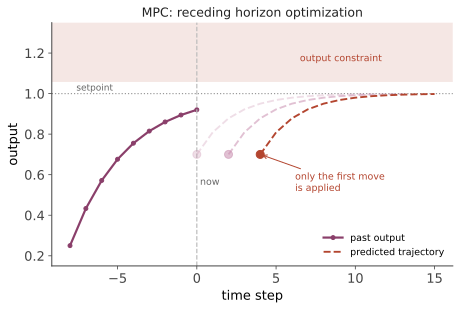

进阶 III · 最优控制与 MPC
层次：研究生核心 + 唯一大规模工业落地的"高级"方法 ｜ 🔗 前置：凸优化（grad-math）。 前面反复出现同一个短板：PID 无法处理约束（第六页）、LQR 无法处理约束（第八页）、鲁棒控制保守且难维护（第十六页）。而真实工程中约束无处不在——阀门开度 0–100%、温度不得超限、电流不得过载。MPC（模型预测控制）的全部成功，几乎都来自它对这一件事的正面回答。
一、最优控制的两条经典路线
在讲 MPC 之前，先给出它的理论背景。最优控制求解：
① Pontryagin 极大值原理（PMP）：引入伴随变量（协态）\(\lambda\)，把最优性条件写成两点边值问题。给出开环最优轨迹，是间接法的基础，在航天轨道优化中有经典应用（如燃料最省的 bang-bang 控制）。
② 动态规划（DP）/ HJB 方程：Bellman 最优性原理——最优轨迹的任意后段仍是最优的。给出闭环最优策略 \(u^*(x)\)，但需解偏微分方程（HJB），受维数灾难限制（状态维数一高就不可解）。
LQR 是这两条路线在"线性系统 + 二次代价 + 无约束"下的解析解（第八页）。一旦加入约束，解析解就不存在了——这就是 MPC 出场的地方。
二、MPC 的思想：在线滚动优化
MPC 不去求解析的控制律，而是在每个采样时刻在线求解一个有限时域的优化问题：
关键的三步循环（滚动时域）：
- 用当前状态预测未来 \(N\) 步；
- 优化出整段最优输入序列；
- 只执行第一步，下一时刻用新测量重新优化。

"只执行第一步"这一点极其重要：若执行整段开环序列，模型误差会累积；每步重新优化则把开环最优变成了闭环反馈。这是第一页"预测—比较—修正"循环的第三次出现（反馈控制、观测器、MPC）。
三、为什么 MPC 赢了
① 显式处理约束——这是决定性优势。
其他方法只能事后限幅（第六页的抗饱和是一种补救），MPC 则在优化时就知道约束的存在，从而能提前减速避免触限。更重要的是，它能利用约束边界：过程工业的利润往往来自"贴着约束运行"——最优操作点通常就在某个质量或安全限的边界上，能安全地贴近它就意味着直接的经济收益。这是 MPC 在炼化行业迅速普及的商业理由。
② 天然处理 MIMO 与耦合：多变量在同一优化问题中协调，无需逐对解耦。
③ 可处理时滞与非最小相位：预测模型自然包含它们（对比第一页：时滞是经典反馈的头号敌人）。
④ 目标可直接表达经济指标：经济 MPC 直接优化利润而非跟踪误差。
⑤ 前馈自然融入：已知的未来设定值变化或可测扰动可直接放进预测。
四、代价与工程现实
① 计算量：每个周期要解一个 QP。这曾把 MPC 限制在慢过程（采样周期以分钟计的化工装置），但情况已大变——显式 MPC（离线把解算成分段仿射函数，在线查表）、快速 QP 求解器、以及算力提升，使 MPC 已能用于毫秒级的电力电子与运动控制。
② 需要模型：模型质量直接决定性能。实践中，MPC 项目的大部分工作量在建模与辨识（第十八页），而非控制器本身。
③ 稳定性不自动：有限时域优化不天然保证闭环稳定。理论解法是加终端代价 \(P\) 与终端约束集（构造 Lyapunov 函数论证，第十五页），工业实践中则常靠足够长的时域与充分测试。
④ 可行性：约束可能无解（扰动把状态推出可行域）。必须用软约束（松弛变量 + 惩罚）保证优化器总有解——硬约束在工程实现中是危险的，一次不可行就会让控制器失效。这是实现 MPC 时最重要的实务细节之一。
⑤ 维护门槛：现场人员难以像调 PID 那样直觉地调整。"谁来维护"是工业上采用高级控制的真实约束（承第十三、十六页）。
五、应用版图
| 领域 | 特点 |
|---|---|
| 炼化、石化 | MPC 的发源地与主战场，数千套装置在运行；通常作为"先进过程控制层"运行在 DCS 之上 |
| 电力系统 | 机组调度、储能管理 |
| 汽车 | 发动机控制、底盘、自动驾驶的轨迹规划与跟踪 |
| 机器人 | 全身控制、足式机器人的落脚点规划（实时非线性 MPC 是当前热点） |
| 半导体设备 | 温度、压力的多变量精密控制 |
| 建筑暖通 | 预测天气与占用率，优化能耗 |
分层结构（工业标准做法）：MPC 通常不直接驱动执行器，而是给底层 PID 回路下达设定值。底层 PID 保证快速与安全，MPC 在上层做优化与协调。这个分层既利用了 MPC 的优化能力，又保留了 PID 的可靠性与可维护性——是理论与实践妥协的一个漂亮范例。
六、非线性 MPC 与鲁棒 MPC
- NMPC：预测模型为非线性，需在线解非凸优化。计算昂贵且可能陷入局部极小，但在机器人与航空航天中已有实时应用（借助实时迭代、SQP 与 GPU）；
- 鲁棒/管道 MPC（tube MPC）：为不确定性预留裕度，保证所有可能扰动下都满足约束。代价是保守（承第十六页的老问题）；
- 随机 MPC：用概率约束（"越限概率小于 5%"）代替硬约束，减少保守性，适合风电、需求预测等本质随机的场合；
- 学习型 MPC：用数据改进预测模型或代价函数——这是通往下一线的桥（第二十页）。
七、要点
- PMP 给开环轨迹、DP/HJB 给闭环策略但受维数灾难；LQR 是无约束线性情形的解析解；
- MPC = 在线滚动优化 + 只执行第一步，后者是反馈的来源；
- 显式处理约束是它压倒性的优势，且"贴着约束运行"直接创造经济价值；
- 稳定性需终端条件保证，可行性需软约束保护——两条关键实务；
- 分层架构（MPC 下达设定值、PID 执行）是工业标准，兼顾优化能力与可维护性；
- 项目的主要工作量在建模——这把我们带向下一页。
下一页：既然模型如此关键，模型从哪来？系统辨识——从数据中获得模型；以及自适应控制——在运行中不断修正模型。